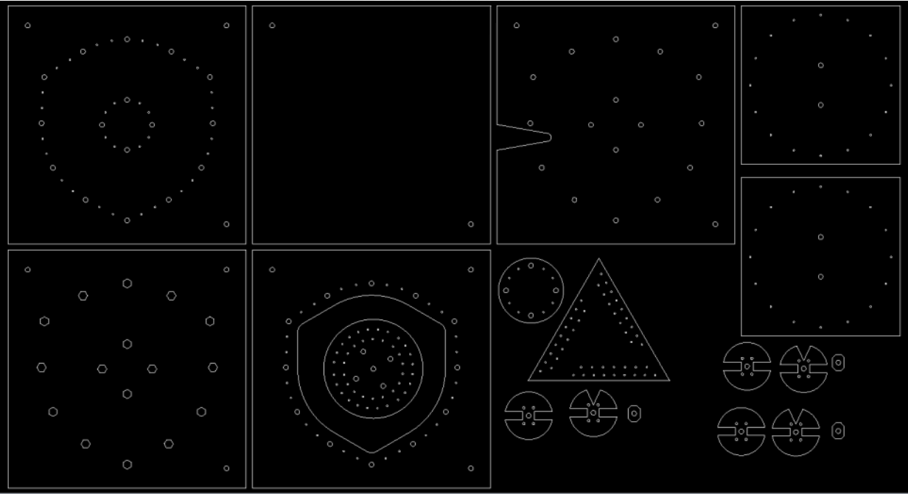

Democratizing Small Wind Through Open-Source Computer-Aided Design (CAD)
by G Roques
Overview
- Design Manuals
- Reasons for Adapting Designs
- OpenAFPM
- Why open-source CAD? and a bit about FreeCAD
- Prior Work
- Wind Turbine Parameterization
- 3 features
- Visualization
- Laser cutting flat steel and plywood parts
- Construction information such as dimensions and part count
A Wind Turbine Recipe Book
- 6 designs ranging from 1.2 - 4.2 meters in diameter (4 - 14 feet)
- 46 × 30 × 10 mm N40 or N42 neodymium magnets
2F Wind Turbine Construction Manual
- 1 design for a 2 meter diameter turbine
- 50 × 50 × 20 mm ferrite magnets

Reasons for Adapting Designs
- üîç Cannot find materials locally
- üí≤ Must import materials at a higher cost
- üïë and / or wait long delivery times
- ü´¥ Want to design with materials on hand
- üåä Ferrite magnets are more suitable for humid coastal areas than neodymium magnets
- ⚙️ Custom applications such as grid-connection, wind pumping, or hydro
OpenAFPM
- Online design tools for locally manufactured small wind turbines
- Simulates generator using analytical equations and finite element analysis
- Input blade rotor size and magnets, then output a design
- Blade rotor diameter ranges from 1.2 - 7 meters
- Open-access
Why open-source CAD?
- Freely available — anyone can download, inspect, and change the model
- Access to source-code allows for greater customization and troubleshooting problems
- Increased collaboration through developer platform, forums, wiki, video tutorials and other mediums
- Leading open-source CAD package
- Available for all major operating systems
- First released in 2002
- Written in C++ and Python
- Extensible through Python

Prior Work
- Fabien Pris — June - August 2017
- Richard Parpaillon — June - August 2018
- G Roques — January 2021 - Present
Fabien Pris
June - August 2017
Developed model in SolidWorks, educational materials, and initial FreeCAD parts for a 2.4 meter diameter turbine.
Richard Parpaillon
June - August 2018
Developed initial parameterization of FreeCAD model.
Wind Turbine Parameterization
- Based on outer rotor disk radius radius or effective length of the generator
- T Shape, H Shape, and Star Shape
From left to right: H, Star, and T shape.
T Shape
Outer rotor disk radius < 187.5
H Shape
Outer rotor disk radius < 275
Star Shape
Outer rotor disk radius ≥ 275
Parameter Groups
- MagnAFPM
- Furling
- User
MagnAFPM
Features
- Visualization
- CNC
- Dimensions
Visualization
- Understand how parts fit together
- Explode model
- Toggle visibility of parts
- Furl tail
- Downloadable ZIP archive containing FreeCAD files
CNC Pros & Cons
- Saves time
- Reduces human error
- Increases financial cost (~300 euros)
ZIP archive contains DXF files
Tail_Vane.dxf
ZIP archive contains overview.svg file
SVG Overview
- Parts grouped by material and thickness
- Includes quantity
- Viewable "to scale" in Inkscape

Inkscape
Must be optimized by operator to require less stock material.
Space Optimized Placement
Space Optimized Placement
Dimensions
- Serves as a “cut list” or “bill of materials” for gathering and buying materials
- Serves as a reference during construction
- Based on "A Wind Turbine Recipe Book (2014 metric edition)